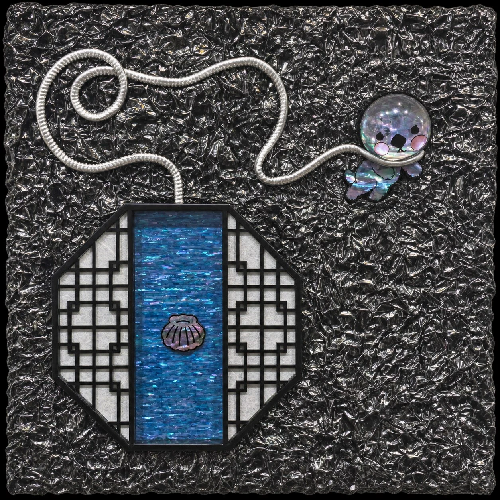

우주조약 II
목심박피나전칠기(천연자개, 옻칠, 금속박 등) · 38 × 38 cm · 2026
우주에 도달하면 권리는 어떻게 될까? 1967년 우주조약 제2조는 우주공간과 천체에 대한 국가적 전유를 금지한다. 그러나 제8조는 등록된 우주물체에 대한 관할권과 통제권, 그리고 우주물체의 소유권이 우주에 있다는 이유만으로 사라지지 않는다고 규정한다. 국가의 영토를 벗어나 광활한 우주로 나아가더라도 모든 권리가 소멸하는 것은 아니다. 우주에 도달하는 것은 권리로부터 이탈하는 일이 아니다. 경계를 벗어난 뒤에도 권리는 따라간다.
전시 이력Exhibitions
- [예정] 2026.11.30 – 2026.12.06 신해달 온라인 개인전, shinhaedal.com[Upcoming] 2026.11.30 – 2026.12.06 Sinhaedal Online Solo Exhibition, shinhaedal.com
- 2026.11.23 – 2026.11.29 나전칠기로 ART하는 法, 갤러리비브, 서울, 대한민국2026.11.23 – 2026.11.29 LAWQUER, LAWfully ARTful, LAWQUER = LAW + LACQUER, GalleryVIV, Seoul, Korea